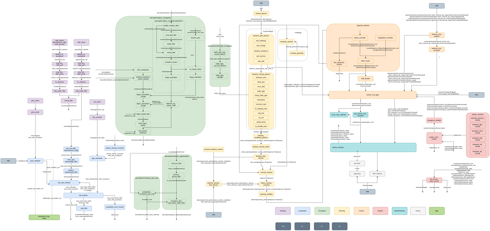
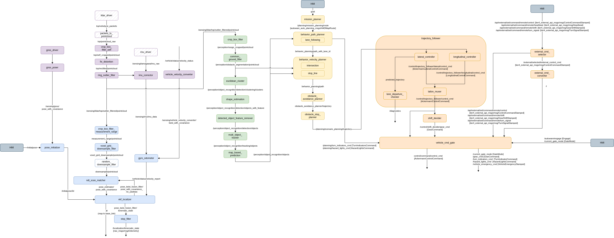

Customizing Autoware
本ページでは、既存のAutowareをカスタマイズし、自作のパッケージなどを追加する方法を紹介します．
また、デフォルトのAutowareから機能を絞り、最小構成のAutoware「Autoware Mini」の紹介もしています．
How to customize and use Autoware packages
- 元のパッケージをコピーして、下記を変更
- パッケージ名
- フォルダ名
- コード
- package.xml
- CMakeLists.txt
- aichallenge_submitの中に配置
- autoware_universe_launchから呼び出されるlaunchファイルを変更
- 参考例：pose_initializer_custom（ autoware_universe_launch/tier4_localization_launch/launch/util/util.launch.xmlから呼び出しております）
Autoware-Mini
デフォルトのAutowareでは様々な走行環境に対応するため、たくさんのノードから構成されています．
Autowareの公式ドキュメンテーションでは、Autowareを構成するROSノードの構成図を見ることもできます．以下に現時点の図を示します．

自動運転に関わる各コンポーネントで多種多様な機能を揃えており、難易度の高い走行環境にも対応できるように作られています．
一方、その複雑な構成を理解し、各パラメータの意味や調整の仕方、モジュールの切り替え・入れ替えなどを行うことが必ずしも容易ではなくなっています．
そのため、今回は、デフォルトのAutowareから機能を絞り、ノード数を減らした最小構成のAutoware「Autoware-Mini」を起動できるLaunchファイルを用意しました．
Autoware-Miniのノード図を以下に示します．ノード数が格段と減り、基本的な自動走行を可能とする機能のみが揃っていることが分かります．

Autoware-Miniの特徴としては、以下が挙げられます．
- ほぼ全てのノードの起動を直接1つのLaunchファイルから行っている．既存のAutowareでは、Launchファイルが何重にも分かれており、実際にノードが起動する箇所に辿り着くまでLaunchファイルをいくつも辿っていく必要がある．
- パラメータを直接ノード起動時に書き込んでいるため、どのパラメータがどのノードで必要なのかを簡単に追うことができる．
- 各ノードの入出力となるROSトピック名も直接ノード起動時に
remapしているため、トピック名も簡単に変えられる．
このAutoware-Miniをベースに自動運転ソフトを書くことで、以下のようなことができます．
- シンプルな構成となっているため、Autowareの中身をより深く理解できる
- 自作のモジュールをAutowareのものと簡単に入れ替えることができ、機能の改善に取り組める
- パラメータを変更した場合のシステム全体の動作への影響が分かりやすい
- 今回のAutoware-Miniには含まれていない既存のAutowareのノードを追加することもできる
Using Autoware-Mini
Autoware-Miniのセットアップと使い方を説明します．
Pulling newest changes from GitHub
既にaichallenge2023-simをセットアップしていた方は、以下を実行し、最新のソースをmainブランチからPullしてください．
cd aichallenge2023-sim/
git pull
Autoware-MiniのLaunchファイルはaichallenge2023-sim/docker/aichallenge/aichallenge_ws/src/aichallenge_submit/aichallenge_submit_launch/launch/autoware_mini_awsim.launch.xml (GitHubリンク) にあります．
Updating aichallenge_submit.launch.xml
autoware_mini_awsim.launch.xmlを起動するためには、aichallenge_submit.launch.xmlをまず修正する必要があります．
このファイルのコメントアウトしている箇所を有効にし、上のe2e_simulator.launch.xmlを起動している箇所をコメントアウトしてください．
<?xml version="1.0" encoding="UTF-8"?>
<launch>
<!-- Autoware -->
<!-- <include file="$(find-pkg-share autoware_launch)/launch/e2e_simulator.launch.xml">
<arg name="vehicle_model" value="golfcart"/>
<arg name="sensor_model" value="awsim_sensor_kit"/>
<arg name="map_path" value="/aichallenge/mapfile"/>
<arg name="rviz" value="false"/>
</include> -->
<!-- Uncomment the following lines to try Autoware-Mini -->
<include file="$(find-pkg-share aichallenge_submit_launch)/launch/autoware_mini_awsim.launch.xml" >
<arg name="vehicle_model" value="golfcart"/>
<arg name="sensor_model" value="awsim_sensor_kit"/>
<arg name="map_path" value="/aichallenge/mapfile"/>
<arg name="rviz" value="false"/>
</include>
<include file="$(find-pkg-share initialpose_publisher)/launch/initialpose_publisher.launch.xml" />
<include file="$(find-pkg-share self_driving_controller)/launch/self_driving_controller.launch.xml" />
</launch>
Updating aichallenge.launch.xml
次に、Autowareを起動した際のGUIツールRviz2の見た目を変えるため、Rviz2コンフィグファイルをAutoware-Mini用のものに設定します．
aichallenge.launch.xmlを以下のように変えます．
<?xml version="1.0" encoding="UTF-8"?>
<launch>
<!-- RViz parameters -->
<arg name="rviz2" default="true" description="launch rviz"/>
<!-- <arg name="rviz_config" default="$(find-pkg-share autoware_launch)/rviz/autoware.rviz" description="rviz config"/> -->
<!-- Below is a more suitable RViz2 config for trying out Autoware-Mini -->
<arg name="rviz_config" default="$(find-pkg-share autoware_launch)/rviz/autoware-mini.rviz" description="rviz config"/>
<!-- Scoring -->
<include file="$(find-pkg-share aichallenge_scoring)/launch/aichallenge_scoring.launch.xml">
<arg name="result_score_topic" value="/aichallenge/score" />
</include>
<node pkg="aichallenge_scoring_result" exec="scoring_result" name="scoring_result" output="screen" />
<!-- Submitted Package -->
<include file="$(find-pkg-share aichallenge_submit_launch)/launch/aichallenge_submit.launch.xml" />
<!-- RViz -->
<group>
<node pkg="rviz2" exec="rviz2" name="rviz2" output="screen" args="-d $(var rviz_config) -s $(find-pkg-share autoware_launch)/rviz/image/autoware.png" if="$(var rviz2)"/>
</group>
</launch>
Updating behavior_path_planner.param.yaml
次に、Planningコンポーネントのbehavior_path_plannerとbehavior_velocity_plannerにおいては、設定を以下のコンフィグファイルで行う必要があります．
デフォルトのAutowareでは、behavior_path_plannerノードでは、以下のモジュールを有効化しています．
- lane_change
- pull_out
- side_shift
- pull_over
- avoidance
今回のAutoware-Miniでは、一旦ここ全てをOFFにするよう変更を加えます．
...
lane_change:
enable_module: false
enable_simultaneous_execution: false
priority: 4
max_module_size: 1
pull_out:
enable_module: false
enable_simultaneous_execution: false
priority: 0
max_module_size: 1
side_shift:
enable_module: false
enable_simultaneous_execution: false
priority: 2
max_module_size: 1
pull_over:
enable_module: false
enable_simultaneous_execution: false
priority: 1
max_module_size: 1
avoidance:
enable_module: false
enable_simultaneous_execution: false
priority: 3
max_module_size: 1
Updating behavior_velocity_planner.param.yaml
次に、Planningコンポーネントのbehavior_path_plannerとbehavior_velocity_plannerにおいては、設定を以下のコンフィグファイルで行う必要があります．
デフォルトのAutowareでは、behavior_velocity_plannerノードでは、以下のモジュールを有効化しています．
...
launch_stop_line: true
launch_crosswalk: true
launch_traffic_light: true
launch_intersection: true
launch_blind_spot: true
launch_detection_area: true
launch_virtual_traffic_light: true
launch_occlusion_spot: false
launch_no_stopping_area: true
launch_run_out: false
launch_speed_bump: false
今回のAutoware-Miniでは、一旦「stop-line」以外を全てOFFにするよう変更を加えます．
...
# Autoware-Mini (Uncomment the lines below to try Autoware-Mini)
launch_stop_line: true
launch_crosswalk: false
launch_traffic_light: false
launch_intersection: false
launch_blind_spot: false
launch_detection_area: false
launch_virtual_traffic_light: false
launch_occlusion_spot: false
launch_no_stopping_area: false
launch_run_out: false
launch_speed_bump: false
Run Autoware-Mini
これでAutoware-Miniを動かす準備はできました．AWSIMを起動し、以下でAutoware-Miniを実行します．
# Rockerコンテナ内で
cd /aichallenge
bash build.sh
bash run.sh